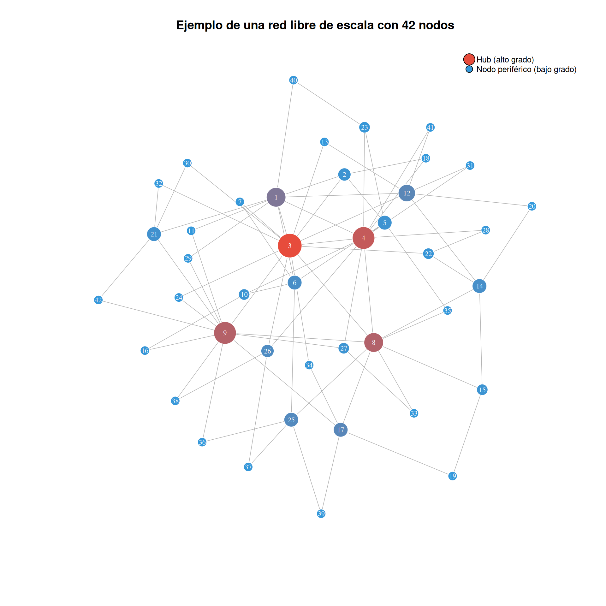
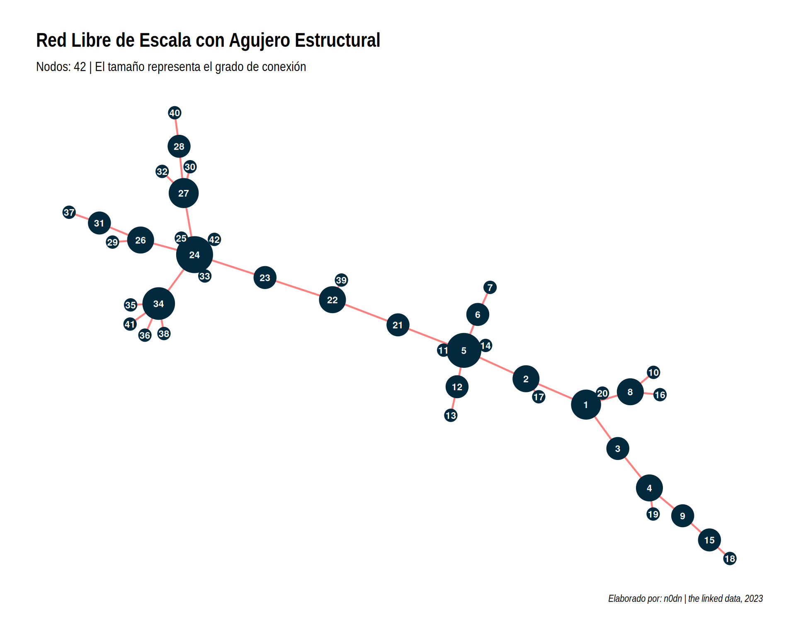

Introducción al análisis de redes sociales
teoría
metodología
redes
Introducción a la metodología del análisis de redes sociales
El Análisis de Redes Sociales (ARS)estudia el comportamiento colectivo de agentes interrelacionados de manera orgánica ha sido compuesta a lo largo de más de medio siglo por diferentes ciencias, desde las matemáticas de los grafos, la antropología de los grupos sociales, las ciencias de la computación y la sociología de las organizaciones1. El ARS posé varias técnicas para la medición, visualización y simulación de los sistemas o redes complejas que compara la relación entre los agentes por medio de la graficación matricial de líneas y puntos2. La organización jerárquica fractal de las redes complejas amerita diferentes tipos de mediciones de la red de acuerdo a sus dimensiones para comprender las dinámicas los diferentes subsistemas y su vinculación con el comportamiento de la red en su conjunto. Existen pues, tres tipos generales de medición de las redes: globales, locales y de posición.
2 Medidas locales
Las medidas locales permiten conocer la estructura de las subredes que componen una red. Estas subredes se componen por la conexión de tres o más nodos que conforman una camarilla. Para calcular la cantidad de camarillas a la que está relacionada una camarilla kse utiliza la medición del k-cliqué que al igual que el k-node permite identificar a las camarillas mejor conectadas con respecto al total de la red. Los N-clan, por su parte, identifica los llamados círculos sociales y la pertenencia de un nodo o los miembros de una camarilla a uno o más círculos sociales 5. No obstante, los círculos sociales y k-cliquessólo toman en cuenta los vínculos directos y no los efectos indirectos o patrones pues como mostraron Cook, Emerson, Gilmore y Yagamashi a partir de experimento de simulaciones matemáticas, la centralidad de los k-clique e incluso los k-nodes no son iguales al poder en redes de intercambio, ya que aquellos nodos o camarillas que poseen mayor centralidad dentro de la red no son los más exitosos en el ejercicio del poder de negociación.
3 Medidas de posición
Las medidas de posición se refieren al lugar que ocupan los nodos con respecto a toda la toda la red o al cluster al que pertenecen. Para ello, se analizan los llamados cierres triádicos, es decir, la entidad numéricamente menor de un clique. El cierre triádico que conecta una red con otra se le conoce como agujero estructural, que se refiere a la distancia estructural entre los nodos con vínculos fuertes y los nodos con vínculos débiles. Al unir dos redes independientes mediante un solo enlace entre los nodos 21 y 22, estos actúan como brokers. Si eliminas ese enlace, la red se parte en dos; por lo tanto, esos nodos controlan el flujo de información en el “agujero” entre ambas comunidades(Burt, s. f.). Por su parte, la equivalencia estructural se refiere a que dos nodos se encuentran conectados a los mismos nodos como los nodos 30 y 32.

Hasta este punto se han descrito algunas de las medidas más frecuentes para el análisis de las redes sociales a partir de los niveles de dimensión, sean estos globales, locales y de posición de los agentes. Estos elementos cobran mayor sentido sociológico cuando permiten esclarecer las propiedades relacionales en una colectividad que permiten el intercambio de bienes, información, mercancías y poder. Esta cualidad social intrínseca de las relaciones colectivas se denomina capital social y que se relaciona con el análisis topológico de las redes a partir de las cuales han surgido teorías de redes sobre el capital social.
4 Visualización de las redes
La visualización de las redes sociales ha evolucionado gracias al desarrollo de la computación y la informática. Particularmente desde la década de los noventa del siglo pasado, el desarrollo de softwares de análisis de redes ha mostrado un crecimiento considerable. Desde los puentes de Köningsberg hasta los estudios de Moreno sobre las comunidades de niños al interior de las escuelas norteamericanas, la visualización de las relaciones sociales resulta indispensable para la abstracción de las estructuras. La graficación de los nodos y las aristas permite comprender los roles y las probabilidades de vinculación de un agente con su red y la posición de la red con respecto a otras y que se conoce como transitividad. Para esta investigación emplearemos cuatro softwares diferentes pero que comparten la cualidad de ser gratuitos y disponibles a través de internet de código abierto (open source). En primer lugar utilizaremos el programa Pajek, que es uno de los primeros softwares y uno de los de mayor uso a nivel mundial6 . El segundo es Gephi, cuyas interfases gráficas permiten mejorar la calidad visual de las redes y ofrece una plataforma más amigable que Pajek para la medición de las variables(Bastian, Heymann, y Jacomy 2009). El tercero es Socnetv, cuya facilidad para elaborar redes y formas basadas en medidas de centralidad permite una mayor facilidad de análisis visual que las dos anteriores7 .
5 Simulación de redes
Otro aporte fundamental de la informática al ARS es la posibilidad de simular redes. Robert Shannon define a la simulación como “el proceso de diseñar y desarrollar un modelo computarizado de un sistema o proceso y conducir experimentos con este modelo con el propósito de entender el comportamiento del sistema o evaluar varias estrategias con las cuales se puede opera el sistema”(Shannon 1975). La simulación computacional puede surgir de experimentos aleatorios basados en el Modelo Montercarlo, lineal logístico través de sistemas dinámicos, evolutivos o discretos, entre otros8 . La simulación de redes se ha realizado dentro de los sistemas probabilísticos, dinámicos y discretos. Sin embargo, el desarrollo no sólo de la teoría de redes sino de las redes probabilísticas parten de los trabajos de los matemáticos Paul Erdös y Alfred Rényi(Erdős y Rényi 2022) (Newman, Barabási, y Watts 2011).
Pero la investigación en tiempos recientes sobre simulación de redes complejas ha tenido un gran desarrollo gracias a los notables trabajos de Watts, Strogratz y Barabási9 . La simulación de redes permite por tanto, la posibilidad de comprobar hipótesis o modelos que expliquen dinámicas de los fenómenos de las redes sociales. En este sentido, son una herramienta técnica que permite conocer el comportamiento de los agentes en contexto de conexión a manera de red a partir de la variación de alguno de sus componentes de forma experimental, es decir, tener la posibilidad de tener un laboratorio social desde la abstracción matemática que permite ser computarizada.
Referencias
Bastian, Mathieu, Sebastien Heymann, y Mathieu Jacomy. 2009. «Gephi: An Open Source Software for Exploring and Manipulating Networks». Proceedings of the International AAAI Conference on Web and Social Media 3 (1): 361-62. https://doi.org/10.1609/icwsm.v3i1.13937.
Burt, Ronald. s. f. Structural Holes: The Social Structure of Competition. 1995.ª ed. Cambridge: Harvard University Press.
Erdős, P., y A. Rényi. 2022. «On random graphs. I.» Publicationes Mathematicae Debrecen 6 (3-4): 290-97. https://doi.org/10.5486/PMD.1959.6.3-4.12.
Newman, Mark, Albert-László Barabási, y Duncan J. Watts. 2011. «On the evolution of random graphs». En, 38-82. Princeton University Press. https://doi.org/10.1515/9781400841356.38.
Nooy, Wouter de, Andrej Mrvar, y Vladimir Batagelj. 2018. Exploratory social network analysis with Pajek. Revised and expanded edition for updated software. Structural analysis en the social sciences 46. Cambridge New York, NY: Cambridge university press.
Shannon, Robert E. 1975. Systems simulation: the art and science. Englewood Cliffs, N.J: Prentice-Hall.
Wasserman, Stanley, y Katherine Faust. 2009. Social network analysis: methods and applications. Structural analysis en the social sciences 8. Cambridge New York Melbourne Madrid Cape Town Singapore São Paulo Delhi Dubai Tokyo: Cambridge University Press. https://doi.org/10.1017/CBO9780511815478.
Notas
Para la matemática de la teoría de grafos Harary, F., Graph Theory, Ed. Wiley, 1969, New York. Sobre los estudios antropológicos sobre las redes culturales , Di Maggio, P., “Cultural Networks”, en Harary, F., Graph Theory, Ed. Wiley, 1969, New York, pp. 286-300. Sobre las ciencias de la computación y las redes, Freeman, L.C., “Graphic techniques for exploring social network data” en Carrington, P. J., Scott, J., Wasserman, S., Models and Methods in Social Network Analysis, Cambridge University Press, 2005, Nueva York, pp. 248-69. Sobre la sociología de las organizaciones, , Berkowitz, S.D y Fitzgerald, “Corporate control and enterprise structure in the Canadian economy: 1972-1987”, Social Networks Review, Vol 17, No. 2, pp. 111-27↩︎
En el campo de las matemáticas de grafos, a los puntos se les llama vértices y a las líneas arcos, en las ciencias de la computación, nodos y en laces, en la Física, sitios y vínculos, y en la Sociología actores y relaciones, respectivamente. Asimismo a la red se le suele llamar gráfico, particularmente en los estudios relacionados con las fisico-matemáticas.↩︎
Los ARS poseen un vocabulario propio, mismo que será de gran utilidad en adelante, por lo que se darán algunos de ellos. Se llama camino (walk) al paso entre dos nodos a través de enlaces. Ruta (path) es un camino que sólo pasa por diferentes nodos sin repetirlos. Ciclo es una caminata que termina justo donde empezó. Nos referimos a una geodésica al camino más corto entre dos nodos y diámetro a la distancia más grande, en tanto llamamos ruta promedio al promedio entre las geodésicas. Por otra parte, las redes pueden ser o no dirigidas, esto se refiere a la dirección y la magnitud de un nodo hacia otro en caso ser dirigida que es representada visualmente por una flecha, mientras que cuando no es dirigida simplemente se observan líneas. La dirección de las líneas puede ser uni-direccional cuando un nodo señala a otro, o bidireccional cuando existe una señal de vuelta. Cabe señalar que en algunos nodos se presenta la dirección reticular, es decir, que el nodo se enlaza consigo mismo, estos caso son muy escasos y poco probables, pero que visualmente se observan como un enlace curvo que empieza e inicia en el mismo nodo sin tocar a otro.↩︎
El grado de agrupación depende en primer lugar de la proporción de individuos conectados en toda la red, denominado densidad, así que entre mayor proporción de nodos conectados mayor densidad. Para conocer cuantos de los nodos se encuentran conectados a los k nodos de los grupos se utiliza la medida k-núcleos o k-nodes. La modularidad por su parte se refiere a la densidad de enlaces dentro y fuera de una comunidad identificada. Estas comunidades pueden ser clusters o camarillas. Los clusters son agrupaciones de varias camarillas que tienen enlaces en común, en cambio las camarillas son agrupaciones menos densas que los clusters conformadas por un grupo muy unido de nodos cuyos vínculos son cerrados. Para medir el grado de agrupación se utiliza un coeficiente (clustering coefficient) que mide el grado en el cual los nodos de un grafo tienden a agruparse con base en triadas, por lo que el coeficiente de agrupación también puede ser utilizado como una medida local con el nombre de transitividad. Wasserman, S., y Faust, K., Social Network Analysis. Methods and Applications, Cambridge University Press, 1994, Nueva York, p. 243↩︎
Los círculos sociales están conformados por posiciones sociales temporales, y cuya cohesión de estos círculos se basa en vínculos indirectos que ligan a unos con otros que a su vez “emergen en el curso de la interacción y pueden no ser visibles para aquellos a los que engloban ya que sus ramificaciones son relaciones indirectas muy tenues”Simmel, G., Sociología: estudios sobre las formas de socialización, Alianza Universidad, 1971, Madrid, p. 56↩︎
Pajek (del esloveno pajek o araña) es un programa de ARS desarrollado por los matemáticos eslovenos Vladimir Batagelj y Andrej Mrvar en 1996 cuando salió la primera versión. Permite medir grados de centralidad, realizar particiones de la red, visualizar diferentes redes probabilísticas y análisis de redes dinámicas, cuyos formatos son compatibles con varios softwares. Actualmente existen cuatro versiones disponibles para sistemas operativos Windows, Mac y Linux. (Nooy, Mrvar, y Batagelj 2018)↩︎
Socnetv (Social Network Visualizer) es un “proyecto de ARS flexible y amigable, as{i como una herramienta de análisis a través de varias plataformas para la visualización de redes sociales”. Fue desarrollado como parte de la tesis de maestría en computación por el griego Dimitris V. Kalamaras con quien el autor se ha puesto en contacto por correo electrónico para resolver dudas y mejorar la experiencia del uso de este programa. Disponible en http://socnet.sourceforge.net/ así como en la paquetería dispuesta en las plataformas basadas en Linux↩︎
Sobre la simulación basada en sistemas aleatorios o Montecarlo -derivado de los juegos del casino ubicado en la isla europea del mismo nombre- es recomendable el libro de Flores Zavala, ya que da una visión amplia sobre la utilización de este tipo de sistemas para diferentes estudios científicos. Flores Zavala T.T, V.M., Simulación. Apuntes y ejercicios, Universidad Iberoamericana, 2013, México. En cuanto a la simulación basada en sistemas dinámicos discretos se recomienda el libro de Kíng y Méndez para la aplicación en Ciencias Sociales. King D., J. E., y Méndez L., H., Sistemas dinámicos discretos, Facultad de Ciencias, UNAM, 2014, México. Para la investigación de sistemas evolutivos, es decir, de aquellos que aprenden a adaptarse a los cambios del entorno de manera autónoma, también conocidos como machine learning basado en algoritmos evolutivos se recomienda el trabajo de Araujo y Cervigón. Araujo, L., y Cervigón, C., Algoritmos evolutivos. Un enfoque práctico, Alfaomega, 2009, México.↩︎
Sobre la simulación de redes basados en los trabajos de Watts, Strogratz y Barabási pueden ser consultados dentro de la biblioteca de modelos del software de simulación Netlogo, con los nombres Small Worlds Wilensky, U., NetLogo Small Worlds model. http://ccl.northwestern.edu/netlogo/models/SmallWorlds. Center for Connected Learning and Computer-Based Modeling, Northwestern University, 2005, Evanston. y Giant Component Wilensky, U., NetLogo Giant Component model. http://ccl.northwestern.edu/netlogo/models/GiantComponent. Center for Connected Learning and Computer-Based Modeling, Northwestern University, 2005, Evanston. En cuanto a las investigaciones de Barabási se encuentra el modelo Preferential Attatchment. Wilensky, U., NetLogo Preferential Attachment model. http://ccl.northwestern.edu/netlogo/models/PreferentialAttachment. Center for Connected Learning and Computer-Based Modeling, Northwestern University, 2005, Evanston.↩︎